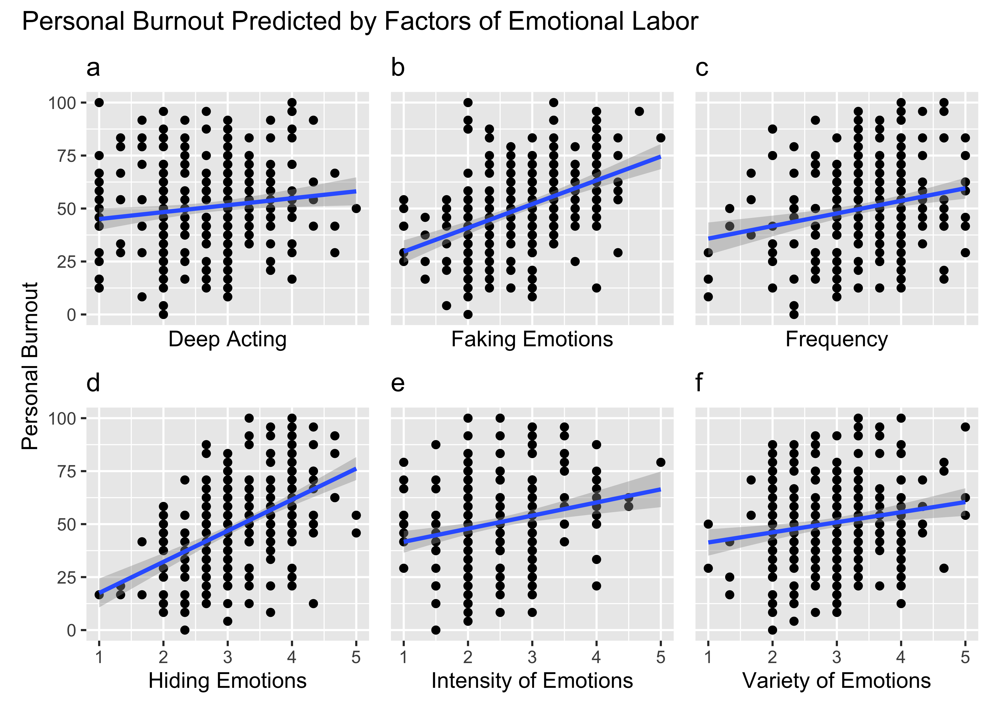

| Parameter | Organizational Support | Negative Affect | Positive Affect | Client-Related | Work-related | Personal | Faking | Hiding | Deep Acting | Variation | Intensity | Frequency |
|---|---|---|---|---|---|---|---|---|---|---|---|---|
| Duration | -0.01 | 0.05 | -0.08 | 0.05 | 0.03 | 0.02 | 0.04 | 0.05 | -0.04 | -0.06 | -0.06 | 0 |
| Frequency | -0.17 | 0.13 | 0.02 | 0.13 | 0.23 | 0.23 | 0.40 | 0.23 | 0.39 | 0.37 | 0.23 | |
| Intensity | -0.06 | 0.21 | 0.05 | 0.11 | 0.23 | 0.22 | 0.13 | 0.01 | 0.26 | 0.43 | ||
| Variation | -0.09 | 0.15 | 0.11 | 0.11 | 0.15 | 0.18 | 0.15 | 0.08 | 0.32 | |||
| Deep Acting | -0.03 | 0.07 | 0.00 | 0.05 | 0.10 | 0.14 | 0.23 | 0.12 | ||||
| Hiding | -0.55 | 0.43 | -0.42 | 0.40 | 0.57 | 0.50 | 0.63 | |||||
| Faking | -0.41 | 0.37 | -0.33 | 0.38 | 0.51 | 0.44 | ||||||
| Personal | -0.52 | 0.61 | -0.48 | 0.48 | 0.88 | |||||||
| Work-related | -0.57 | 0.58 | -0.53 | 0.53 | ||||||||
| Client-Related | -0.27 | 0.39 | -0.44 | |||||||||
| Positive Affect | 0.40 | -0.30 | ||||||||||
| Negative Affect | -0.39 |
Abstract
Introduction
Literature Review
Methods
Results
`geom_smooth()` using formula = 'y ~ x'
`geom_smooth()` using formula = 'y ~ x'
`geom_smooth()` using formula = 'y ~ x'
`geom_smooth()` using formula = 'y ~ x'
`geom_smooth()` using formula = 'y ~ x'
`geom_smooth()` using formula = 'y ~ x'
